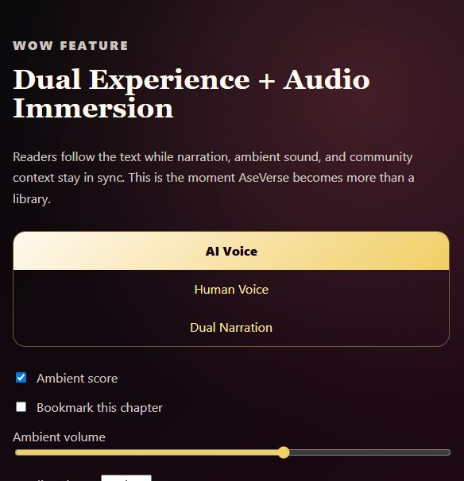
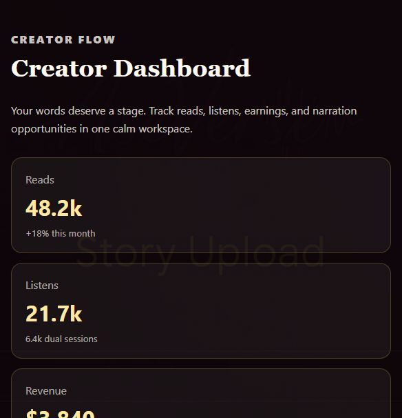
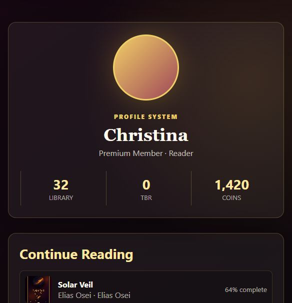

Mock Authentication
Choose a role and enter the MVP with local session state ready for real accounts later.
Functional MVP demo now live
Ink the words. Amplify the voices.
A premium storytelling platform where readers browse immersive stories, switch into Dual Experience audio, save progress, and creators publish with mock dashboard tools.

What is AseVerse?
AseVerse now has a working mock-data MVP that shows the core loop: sign in, browse stories, open a story detail page, read and listen in Dual Experience mode, react with community comments, and publish a creator preview.
Core features
Choose a role and enter the MVP with local session state ready for real accounts later.
Search and filter featured stories across fantasy, romance, and educational content.
Read with synced mock narration, playback controls, theme changes, bookmarks, and ambient settings.
Show quote-level reader comments and book-club style reactions around the selected story.
Publish a mock story preview that appears in creator activity and the story system.
Track reading progress, TBR saves, coins, library stats, and creator uploads in one profile.
Who it's for
Browse featured stories, filter by format, save titles to TBR, read with custom themes, control mock audio, and continue from saved progress.
Use the creator dashboard, review mock reads/listens/revenue, upload a story preview, and see new work appear in creator activity.
The demo already treats narrators as visible story metadata, with narrator switching and voice-forward audio controls ready for future profiles.
Demo preview
These previews are captured from the current functional mock-data demo: home, Dual Experience, creator tools, and profile state.


Early access
The demo is moving from mock backend data toward real accounts, uploads, and community features. Join the list to help shape beta access.
Founder note
The first MVP now shows the real shape of AseVerse: readers can experience stories, creators can submit work, and voice can become part of the product from the first chapter.